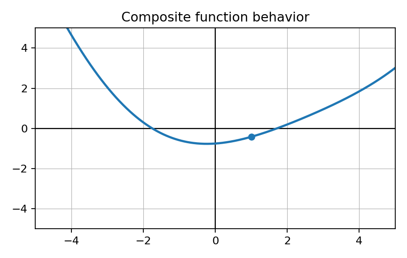
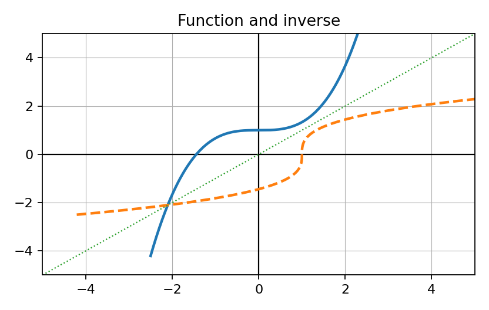

Show work and write reasoning clearly. Use correct derivative notation.

- Identify this as a graph representation.
- State one question about derivative behavior it could help answer.
Show work and write reasoning clearly. Use correct derivative notation.
Sort the expressions by likely first strategy: chain, product, quotient, or implicit.
- $y=(x^2+4)^7$
- $y=x^2\sin x$
- $x^2+y^2=25$
- $y=�rac{e^x}{x^2+1}$
Show work and write reasoning clearly. Use correct derivative notation.
Identify the representation and what information can support an inverse derivative.
Show work and write reasoning clearly. Use correct derivative notation.

- Identify the original function and inverse relationship.
- State the line that connects them.
Show work and write reasoning clearly. Use correct derivative notation.
Read: “The derivative of $y$ must include $�rac{dy}{dx}$ because $y$ depends on $x$.”
- Which procedure does this describe?
- What notation appears?
Show work and write reasoning clearly. Use correct derivative notation.
Sort as explicit, implicit, or inverse: $y=(x^2+1)^3$, $x^2+xy=10$, $g=f^{-1}$.